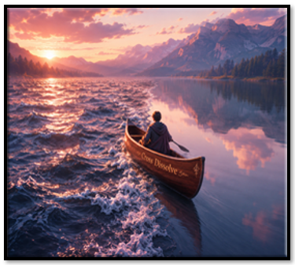
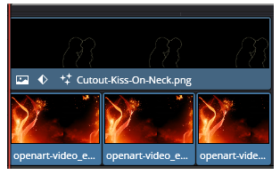
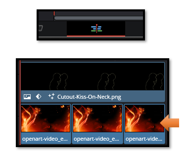
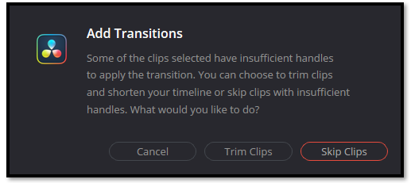
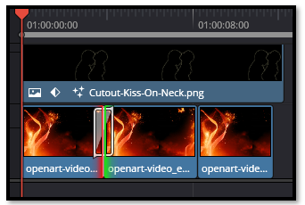
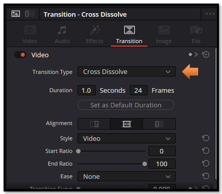
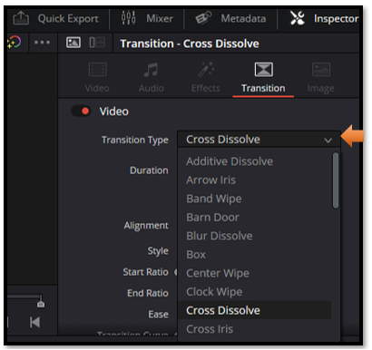

~7 How to Create Smooth Transitions Between Clips in DaVinci Resolve~
7/13/2026
Cross Dissolve shows how even jumpy clips can flow into one seamless moment.

The video clips that I was given were very short in length, and I really needed the duration of the video to be longer, so I put a string of clips, on the same track, next to each other. But going from one clip to another was like going over a bunch of speed bumps. I needed this transition between clips to be much smoother.

Smooth Transitions for Background Video Clips
- In the Edit page timeline, look at your bottom video track (V1)

- Click on the cut/seam between the first two background clips
- Make sure you're clicking on the V1 track, and not any track above it that you do not want to be working with.
Note-If you get this error, it means you did not overlap your clips, or you did not have DaVinci trim them slightly to provide for the overlap. You can do either way, either drag the second clip slightly to the left where it overlaps the first clip, but it is easier to have Davinci trim the clips for you it will shorten them slightly.

Now you should see the white rectangle which tells you, step 3, should work

- Press Ctrl + T to add a Cross Dissolve
- This will create a much smoother blend between these clips
After adding, you can select the white rectangle between frames to select the transition, and then choose your Cross Dissolve here in the Inspector on the right side of the screen.

- Repeat for each cut between your background clips on V1
- Make the transitions longer:
- Click on the transition (the white rectangle in-between clips)
- Drag out the white rectangle to widen it, to about 45-90 frames (1.5-3 seconds)
- Longer transitions hide the jumps better
How to Tell what Transition you have Applied
- Click on the small white rectangle between your clips on the V1 timeline
- Look at the Inspector panel (top right)
- It will show the transition name and settings
- You should see your "Cross Dissolve" in the dropdown box here.

- Hover your mouse over the transition on the timeline
- A tooltip should pop up showing the transition name
What You're Seeing:
- Red box around "Cross Dissolve" in the left panel = That transition is currently selected in the library
- Red marks in Cross Fade = Recent/favorite indicators
- What's actually on your timeline = Check the name by clicking the transition itself.
Creating smooth transitions isn’t about hiding mistakes — it’s about guiding the viewer’s eye so the story flows naturally from one moment to the next. With just a few simple adjustments in DaVinci Resolve, you can turn abrupt cuts into seamless blends that feel intentional and polished. Once you get comfortable overlapping clips and choosing the right dissolve, you’ll find that even short, jumpy footage can transform into something soft, cinematic, and beautifully connected.